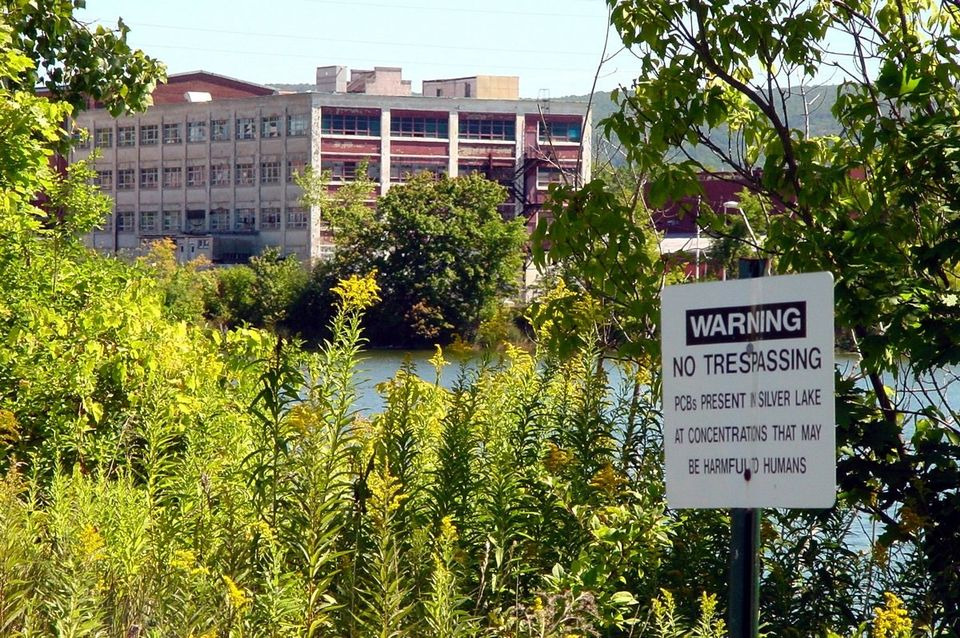
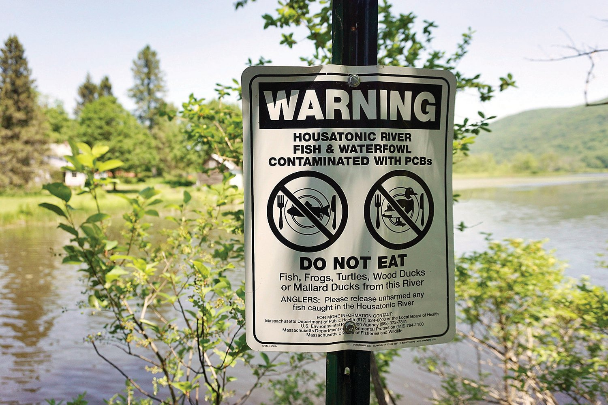
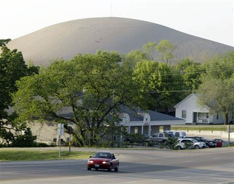
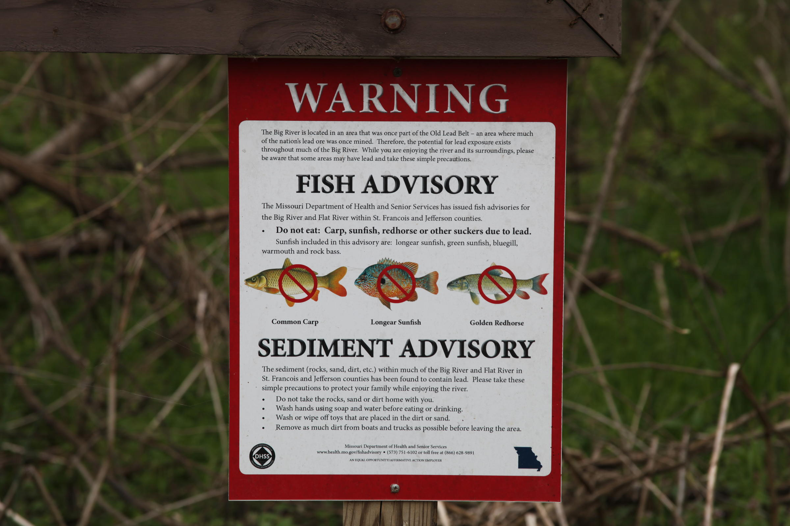
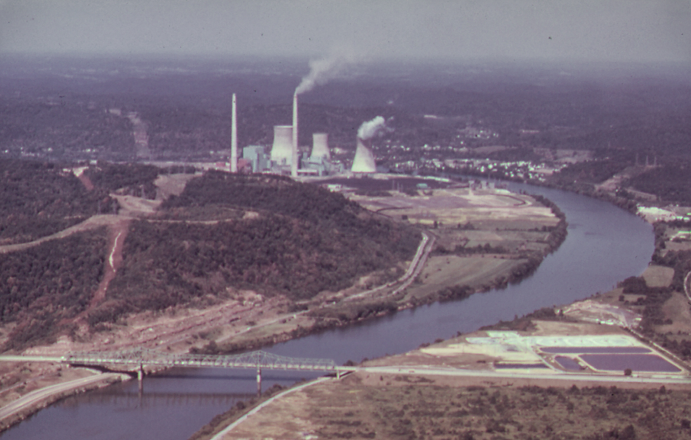
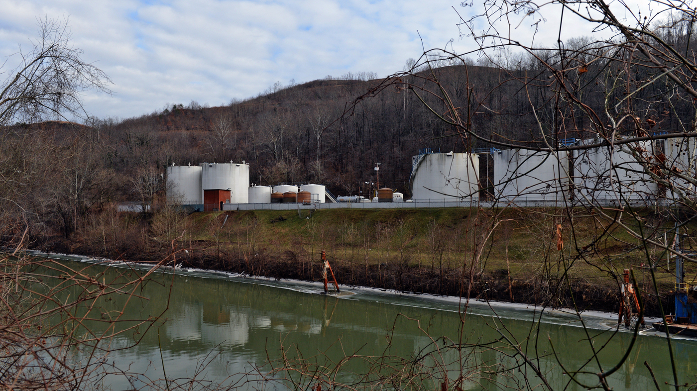

Superfund Program
The Superfund program is responsible for the investigation and clean-up of contaminated sites left over from decades of unregulated industrial manufacturing and other activities.
The most highly contaminated sites which require longer-term remedial action take precedence and are placed on the National Priority List (NPL).
A site must receive a Hazard Ranking System (HRS) score of 28.5 to be placed on the NPL.
These sites displayed here are those currently on the NPL, proposed for the NPL, or that were once on the NPL but have been remedied enough to warrant deletion.
Also included are sites that qualify for the Superfund Alternative Approach (SAA).
The Superfund Alternative (SA) approach requires the same qualifying measures and standards as the NPL, but takes less time and resources to do so.
But the individual sites you see here are only representative of the true area each encompasses.
GE-Pittsfield/Housatonic River Superfund Site
Between 1907 and 1987, the General Electric transformer plant on the banks of the Housatonic River in Pittsfield MA “was one of the crown jewels of GE’s electrical infrastructure, high voltage testing, and defense contracting businesses."
In the 1930’s, the plant began using PCB’s as a coolant to manufacture their transformers.
PCBs do not break down in the environment and are now known to cause both cancer and serious non-cancer health effects, including neurological, immune, endocrine and reproductive issues in humans.
For decades until they were banned in 1979, PCBs leaked from piping throughout the GE plant into the ground, ultimately making their way into the Housatonic River.
PCBs were also dumped directly into the river or other areas around the campus.
Source: GE Left Behind A Complex Legacy In Pittsfield

Photo Credit: Don Treeger
The massive plant was integral to life in Pittsfield, employing nearly 13,000 people at its height in the 1940s and occupying over 300 acres.
The plant began to gradually dismantle in the late 1970’s, closed its transformer division in 1986, and finally shuttered for good in 2007.
The enormous footprint left behind by the plant’s closure is now part of the clean-up area designated by this Superfund site.
The cleanup areas include various complexes making up the GE campus, in addition to properties located in the Housatonic's floodplain, the Allendale School area, former oxbow areas resulting from rechannelization of the river in the 1940s, and a half-mile reach of contaminated riverbanks and sediments in the East Branch of the Housatonic River.
Source: In Pittsfield, General Electric plant closures leave bitter memories and EPA

Photo Credit: Warren Fowler
Over time, storms and floods have disturbed PCB laden sediment from the river bottom and soil from contaminated river banks, redistributing it further down the river and into floodplains.
The “Rest of River” cleanup area included in this Superfund site covers nearly 125 miles from the confluence of the East and West Branches in Pittsfield to just before the Long Island Sound in Connecticut.
PCBs are persistent in the environment, resistant to degradation, and accumulate quickly in the body but are very slow to leave.
Fish and wildlife throughout the Housatonic watershed have tested at very high concentrations of PCBs, and both Massachusetts and Connecticut have issued consumption advisories.
Humans are also at risk for exposure by direct contact with contaminated soil or sediment, or consumption of agricultural products produced in the floodplain.
PCBs could remain present in the Housatonic River ecosystem for hundreds of years without intervention.
Source: EPA

Photo Credit: Eagle File Photo
Southeast Missouri Lead District
Missouri is home to the largest lead concentrations in the world, which has been mined for over a century.
The seven Superfund sites seen here are defunct lead mines located in the Southeast Missouri Lead District.
Mining at these sites left behind hundreds of millions of tons of mining waste contaminated with lead, and other heavy metals and toxic chemicals.
Much of this waste is in the form of enormous chat piles that are susceptible to wind and water erosion.
By the time the EPA began remediating sites, covering these piles to prevent erosion, the damage was already done.
Source: Life in Missouri’s Fading Old Lead Belt

Photo Credit: James A. Finley / AP
Contaminants from the chat piles has been distributed throughout the area, now encompassing an area much larger than is first suggested by the location of each site.
The total area affected by these seven Superfund sites covers four entire counties in Missouri: Washington, Jefferson, St. Francois, and Madison.
Heavy metals and toxic chemicals also leached into groundwater, eventually draining into the Big River, which runs through Washington, Jefferson, and St. Francois counties.
In 1977, heavy rains caused an estimated 50,000 cubic yards of contaminated mining waste to slough into the Big River.
As part of remediation efforts, the EPA conducts soil testing and cleanup for properties along the river and located on its floodplain.
The EPA also recommends that children in the area undergo annual blood testing for lead.
Source: EPA

Photo Credit: Kristofor Husted / KBIA
Toxics Release Inventory (TRI) Program
The EPA also monitors active facilities all over the country that are currently releasing toxic chemicals into our air, water, and land through the TRI.
The TRI was established under the Emergency Planning and Community Right-to-Know Act (EPCRA) of 1986 after public concern grew over the 1984 Bhopal, India disaster, in which an American-owned Union Carbide pesticide plant released a cloud of highly toxic methyl isocyanate into the air, killing thousands of people.
Then in 1985, another, although smaller, toxic cloud was released from a Union Carbide plant on the Kanawha River in West Virginia.
As of 2018 there are 21,557 facilities that report the release of a toxic chemical as part of the TRI program.
The TRI tracks these releases to provide the public with information and hopefully incentivize companies to improve their environmental performance.
Top 100 Releasing Facilities (total lbs)
I need to add a legend, and fix the circle radius.
I want to create some sort of D3 bar chart that shows total lbs released each year, that highlights the right bar according to the time slider.
In 2007 the EPA introduced the Risk-Screening Environmental Indicators (RSEI) model to help provide context to the information collected by the TRI.
RSEI scores consider not only the size of the chemical release, but also the chemical’s toxicity, its fate and transport through the environment, and the size and location of the exposed population.
These scores can be used to help identify facilities or chemicals that may pose greater human health risk.
For 2018 data, some of the highest scores were the result of ethylene oxide emissions..
Need to add a legend.
The EPA classified ethylene oxide as a carcinogen in 2016, stating that it is at least 30 times more carcinogenic than previously understood, and that long-term exposure can cause an increased risk of cancers of the white blood cells and breast cancer in females.
The largest emissions are occurring along the Gulf, in Texas and Louisiana.
Texas is currently looking to increase their limits.
Louisiana houses 13 of the 109 emitting ethylene oxide facilities in the US, but is responsible for approximately one-fifth of those total emissions.
This area has become known as “Cancer Alley” due to these facilities and others.
Residents and environmental activists in St. James parish are currently fighting against the construction of a new plastics facility.
The enormous 2,300 acre facility proposed by Formosa Petrochemical Corporation could double the amount of toxic emissions already being released into the parish’s air.
Chemical Valley, West Virginia
Let’s go back to West Virginia, where a 1985 chemical release along the Kanawha River helped fuel public outcry for the establishment of the TRI program.
Chemical Valley, as the area around Charleston WV has been dubbed, has long been a site of mining and chemical production.
As of 2018, there are still several facilities in the area that report toxic releases to the TRI.

On a January morning in 2014, around 7,500 gallons of crude 4-Methylcyclohexanemethanol (MCHM) spilled into the Elk River, a tributary of the Kanawha River.
The spill originated from Freedom Industries, a chemical plant whose permits did not allow for the discharge of MCHM.
MCHM is used as a cleansing agent to remove impurities from coal that contribute to pollution during combustion.

The spill occurred upstream from the primary West Virginia American Water intake, treatment, and distribution center.
While it may not pose any proven long-term health effects, over 300,000 residents in nine counties were without drinking water for several days.
Of course the same rivers that provide us with drinking water also tend to be perfect locations for industry.
Show TRI facilities with one-mile of a river here.
Who profits?
The companies that own and profit from these facilities are often located far from the damage they cause.
Show dropdown where user can choose one of the top 10 parent companies, that also filters and shows child companies connected by line.
How does this affect you?
geocode option to find sites close to you?